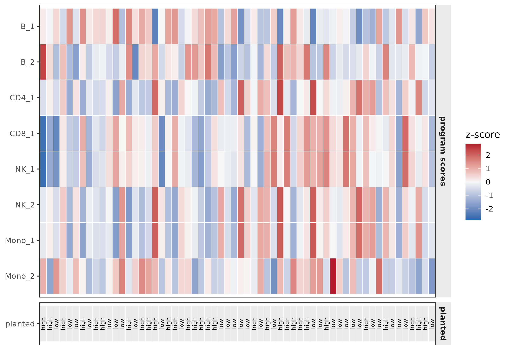
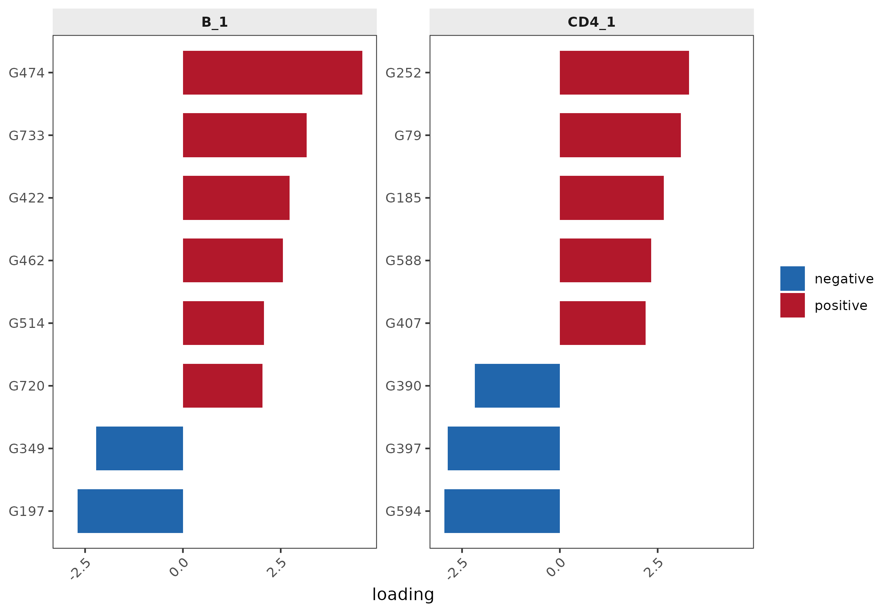
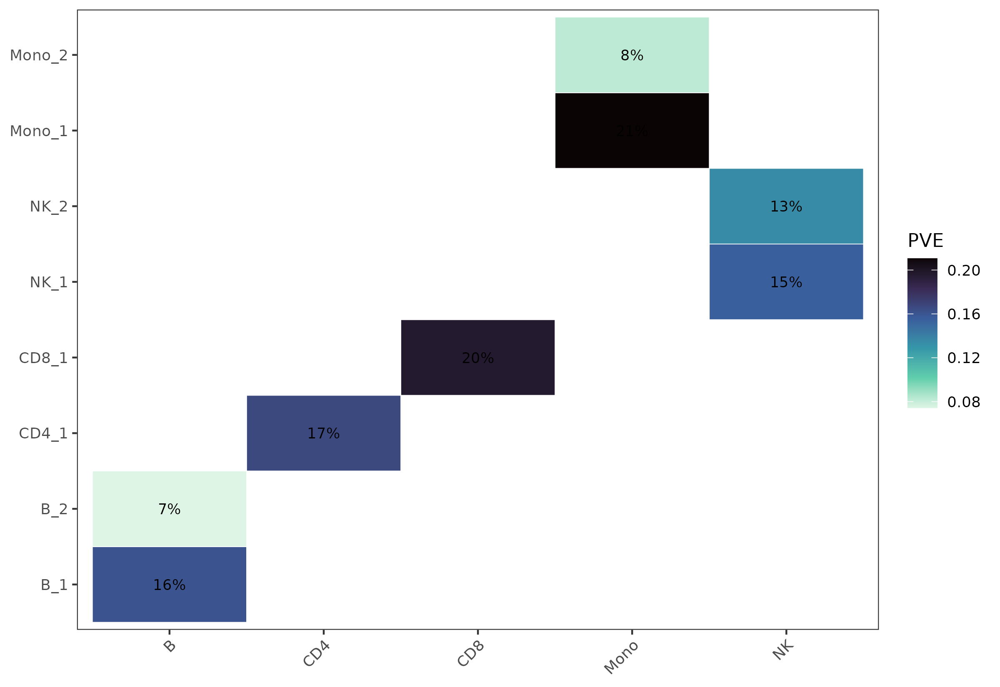
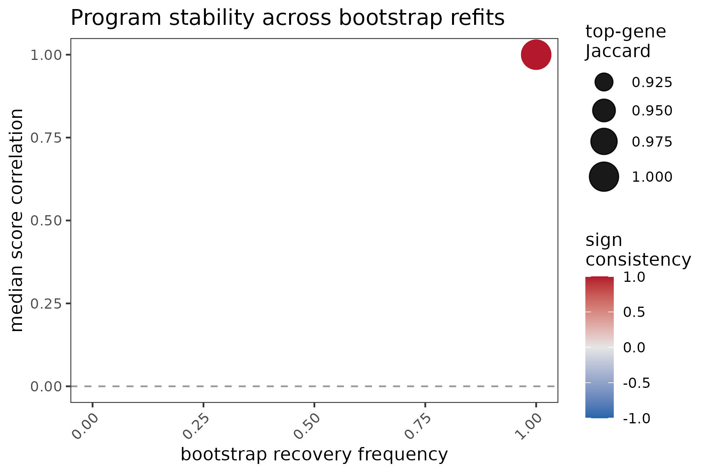
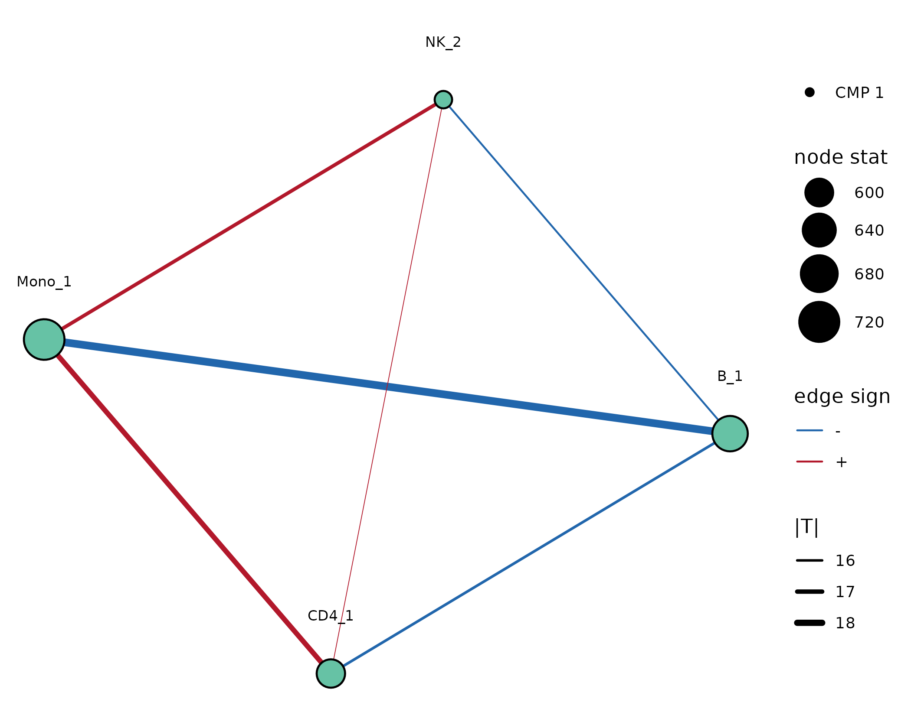
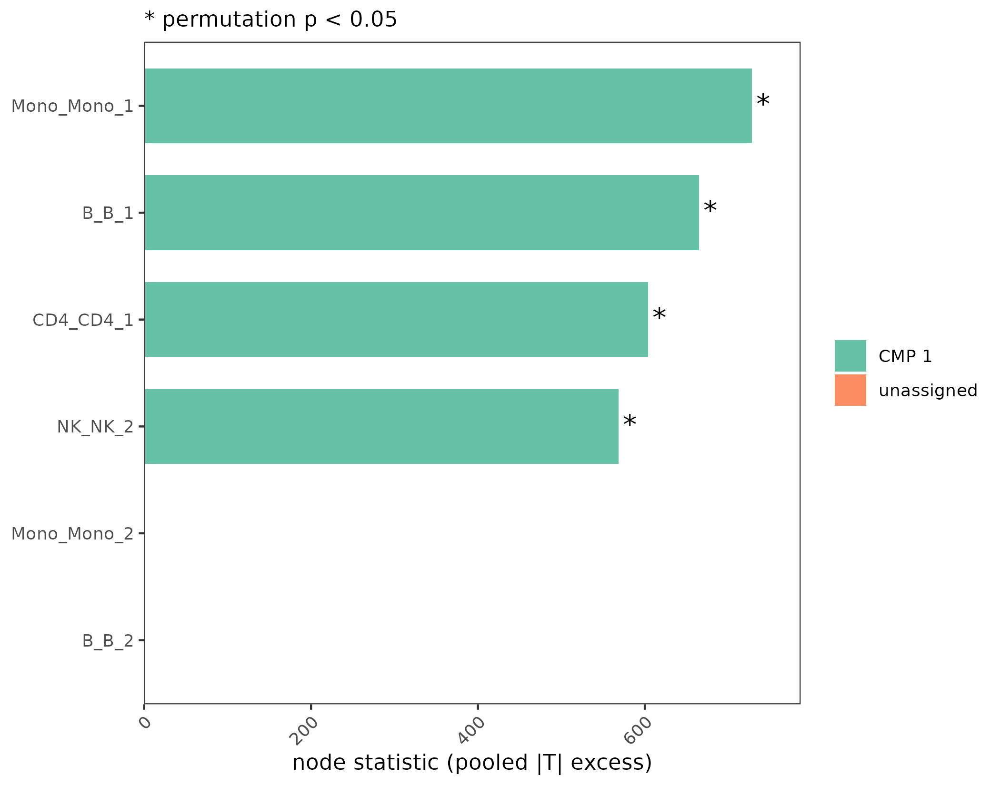
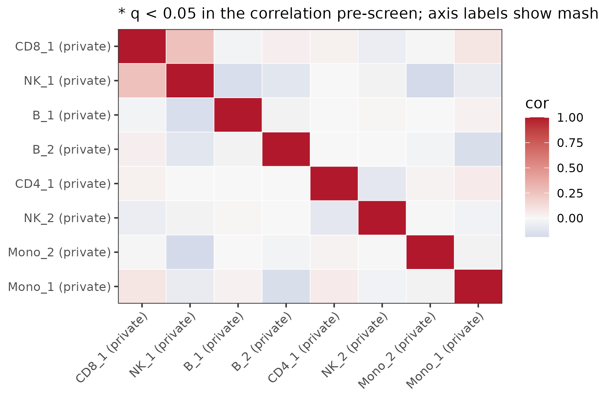
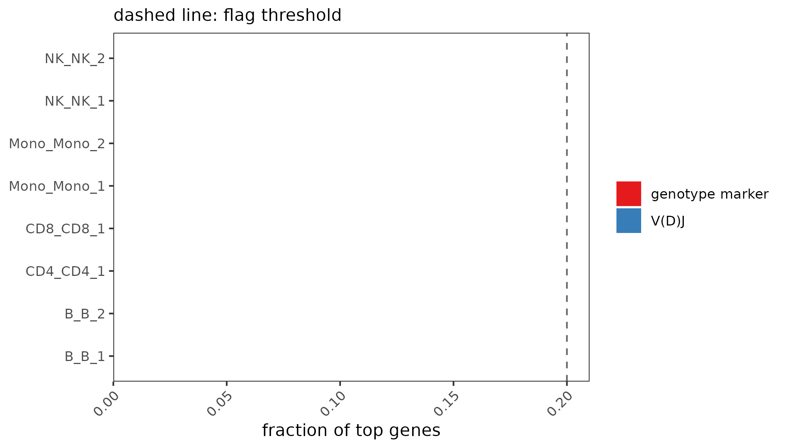

Quick start: from pseudobulk to shared programs
quickstart.Rmdcellprograms discovers transcriptional programs
de novo within each cell type from pseudobulk
single-cell RNA-seq, then investigates cross-cell-type coordination and
sharing afterwards — never assuming it. This vignette runs the whole
pipeline on a small simulated dataset.
Simulate pseudobulk data
simulate_pseudobulk() plants private and shared programs
with known ground truth. The result is a named list of observations x
genes matrices, one per cell type.
library(cellprograms)
sim <- simulate_pseudobulk(scenario = "mixed", n_samples = 60,
n_genes = 800, program_size = 40, seed = 1)
str(sim$pseudobulk, max.level = 1)
#> List of 5
#> $ B : num [1:60, 1:800] 1.146 -2.403 0.573 0.375 -0.425 ...
#> ..- attr(*, "dimnames")=List of 2
#> $ CD4 : num [1:60, 1:800] -1.474 0.59 -0.13 0.372 1.452 ...
#> ..- attr(*, "dimnames")=List of 2
#> $ CD8 : num [1:60, 1:800] 0.0679 0.9149 0.8625 -1.1996 -2.2594 ...
#> ..- attr(*, "dimnames")=List of 2
#> $ NK : num [1:60, 1:800] -0.0478 1.5893 1.175 0.0746 -0.9374 ...
#> ..- attr(*, "dimnames")=List of 2
#> $ Mono: num [1:60, 1:800] -0.7613 -0.4367 -1.4659 0.0574 -1.4384 ...
#> ..- attr(*, "dimnames")=List of 2Build the data object and fit programs
x <- as_cell_program_data(sim$pseudobulk)
validate_cell_program_data(x)
fit <- fit_celltype_programs(x, loading_prior = "point_laplace",
max_factors = 6, features = "variable",
n_variable_genes = 400)
fit <- canonicalize_programs(fit)
fit
#> cell_program_data
#> Cell types: 5 "B", "CD4", "CD8", "NK", and "Mono"
#> B: 60 observations x 800 genes
#> CD4: 60 observations x 800 genes
#> CD8: 60 observations x 800 genes
#> NK: 60 observations x 800 genes
#> Mono: 60 observations x 800 genes
#> Shared genes across all cell types: 800fit_celltype_programs() fits one empirical-Bayes matrix
factorization per cell type (‘flashier’);
canonicalize_programs() resolves sign and scale ambiguity
so programs are comparable downstream. Real-data fits should
additionally pass covariates
(e.g. c("site", "sex")) and use
max_factors = 30 when the goal is CMP detection (see the
CMP benchmark note in README).
Inspect programs
program_summary(fit) # one row per cell type: K, R2, ELBO
#> cell_type n_obs n_genes n_programs R2 elbo
#> 1 B 60 400 2 0.2439779 -36065.09
#> 2 CD4 60 400 1 0.1707640 -35709.99
#> 3 CD8 60 400 1 0.2010540 -35859.83
#> 4 NK 60 400 2 0.2948849 -36081.50
#> 5 Mono 60 400 2 0.2997384 -35859.12
top_genes(fit, "B_1", n = 8) # top loadings of program B_1
#> gene loading lfsr
#> 1 G474 4.582835 2.630908e-244
#> 3 G733 3.164218 1.075143e-117
#> 2 G422 2.724563 7.611642e-88
#> 4 G197 -2.688759 0.000000e+00
#> 6 G462 2.555132 1.603963e-77
#> 8 G349 -2.213170 0.000000e+00
#> 9 G514 2.067245 1.752200e-51
#> 10 G720 2.031627 8.535883e-50Scores (donor x program activities) and loadings (gene x program) are one call away:
Z <- program_scores(fit) # donors x all programs (wide matrix)
W <- program_loadings(fit) # genes x all programs
dim(Z); dim(W)
#> [1] 60 8
#> NULLThe same views as figures — donor x program score heatmap (with the planted context as an annotation strip), top loadings, and per-program variance explained:
sev <- sim$truth$B[[1]]$z > median(sim$truth$B[[1]]$z)
md <- data.frame(observation_id = paste0("obs", seq_along(sev)),
planted = factor(sev, c(FALSE, TRUE), c("low", "high")))
fit_ann <- as_cell_program_data(sim$pseudobulk, sample_metadata = md)
fit_ann <- canonicalize_programs(fit_celltype_programs(fit_ann, loading_prior = "point_laplace",
max_factors = 6, features = "variable",
n_variable_genes = 400))
plot_program_scores(fit_ann, annotation = "planted")
plot_top_genes(fit, c("B_1", "CD4_1"), n = 8)

Stability
assess_program_stability() refits on donor subsamples
and reports how often each program is recovered. Refits that fail are
counted, not silently dropped: fit$stability carries
n_failed and n_success, and recovery
frequencies are computed over successful refits (all refits failing
yields NA, not 0).
fit <- assess_program_stability(fit, n_boot = 4, resample_frac = 0.7,
seed = 1, progress = FALSE)
fit$stability$per_program
#> program_id cell_type n_hit recovery_freq median_score_cor median_loading_cos
#> 1 B_1 B 4 1 0.9999750 0.9979232
#> 2 B_2 B 4 1 0.9997473 0.9897815
#> 3 CD4_1 CD4 4 1 0.9999688 0.9969414
#> 4 CD8_1 CD8 4 1 0.9999710 0.9973450
#> 5 NK_1 NK 4 1 0.9999756 0.9992105
#> 6 NK_2 NK 4 1 0.9999318 0.9961101
#> 7 Mono_1 Mono 4 1 0.9999895 0.9988151
#> 8 Mono_2 Mono 4 1 0.9999177 0.9953085
#> sign_consistency top_gene_jaccard
#> 1 1 0.9523810
#> 2 1 0.8614719
#> 3 1 0.9047619
#> 4 1 1.0000000
#> 5 1 1.0000000
#> 6 1 1.0000000
#> 7 1 0.9047619
#> 8 1 1.0000000
plot_stability(fit)
Coordinated multicellular programs (CMPs)
find_coordinated_programs() tests whether programs from
different cell types co-vary across donors, with family-wise
error control by permutation. Gene overlap plays no role in the
call.
cmp <- find_coordinated_programs(fit, n_perm = 199, seed = 1)
cmp
#> <cmp_result> 1 coordinated multicellular program(s) at FWER 0.05 (mode: marginal, ambient: drop)
#> CMP 1: B_1, CD4_1 (-), NK_2 (-), Mono_1 (-)The coordination network (node size = pooled evidence A_v, edge width = |T|, color = CMP membership) and the per-program node statistics:
plot_cmp_network(cmp)
plot_cmp_nodes(cmp)
Shared vs specific programs
program_sharing() goes the other way: it matches
programs across cell types by loading correlation
(permutation-calibrated), then asks with ‘mashr’ whether the matched
programs share their gene effects — correlated loadings alone
do not imply shared effects.
if (requireNamespace("mashr", quietly = TRUE)) {
shr <- program_sharing(fit, n_perm = 99, seed = 1)
shr
plot_sharing(shr) # pre-screen correlations x mashr classification
}
Artifact genes
Immunoglobulin/TCR V(D)J segments, known donor-genotype markers, and sex-chromosome genes can dominate programs for technical or genetic rather than biological reasons. Flag them in existing fits, or exclude them at fit time (exclusion happens before variable-gene selection):

flag_artifact_genes(fit)
#> cell_type program_id vdj_frac vdj_flag genotype_marker_frac
#> 1 B B_1 0 FALSE 0
#> 2 B B_2 0 FALSE 0
#> 3 CD4 CD4_1 0 FALSE 0
#> 4 CD8 CD8_1 0 FALSE 0
#> 5 NK NK_1 0 FALSE 0
#> 6 NK NK_2 0 FALSE 0
#> 7 Mono Mono_1 0 FALSE 0
#> 8 Mono Mono_2 0 FALSE 0
#> genotype_marker_flag
#> 1 FALSE
#> 2 FALSE
#> 3 FALSE
#> 4 FALSE
#> 5 FALSE
#> 6 FALSE
#> 7 FALSE
#> 8 FALSE
# fit-time masking:
# excl <- artifact_genes(colnames(sim$pseudobulk$B))
# fit_masked <- fit_celltype_programs(x, exclude_genes = excl, ...)